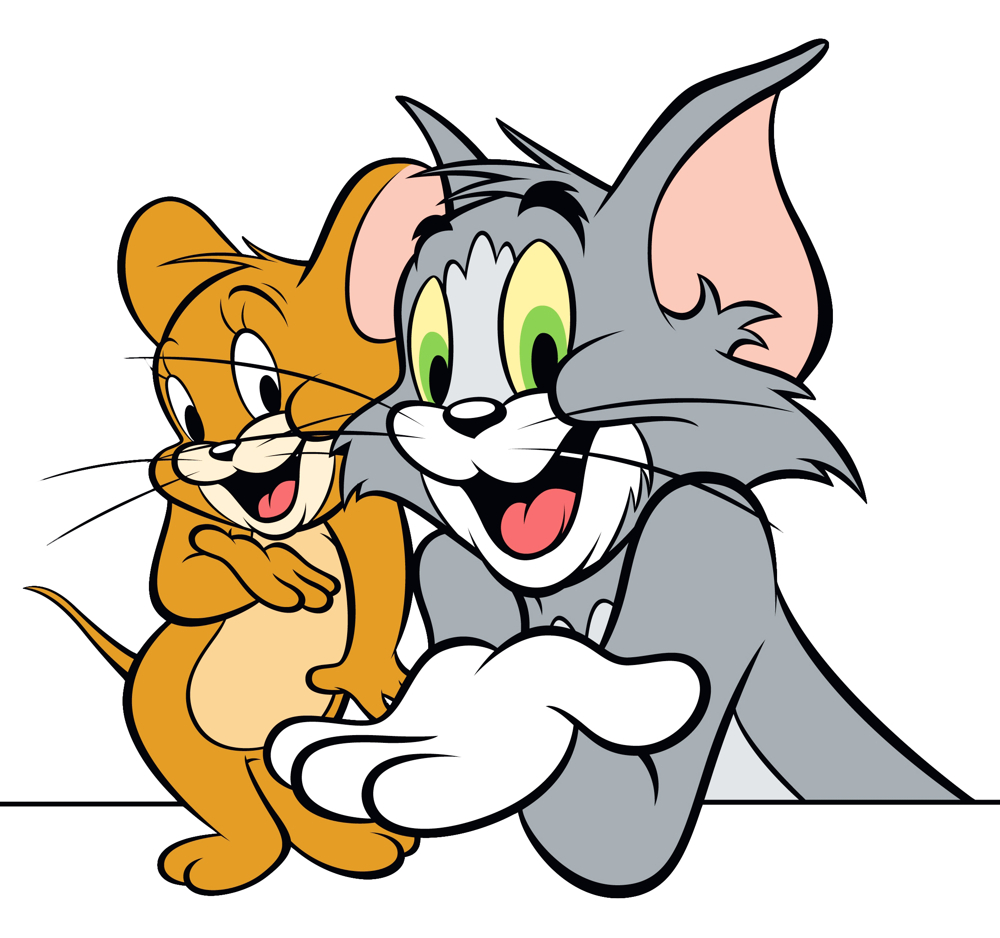
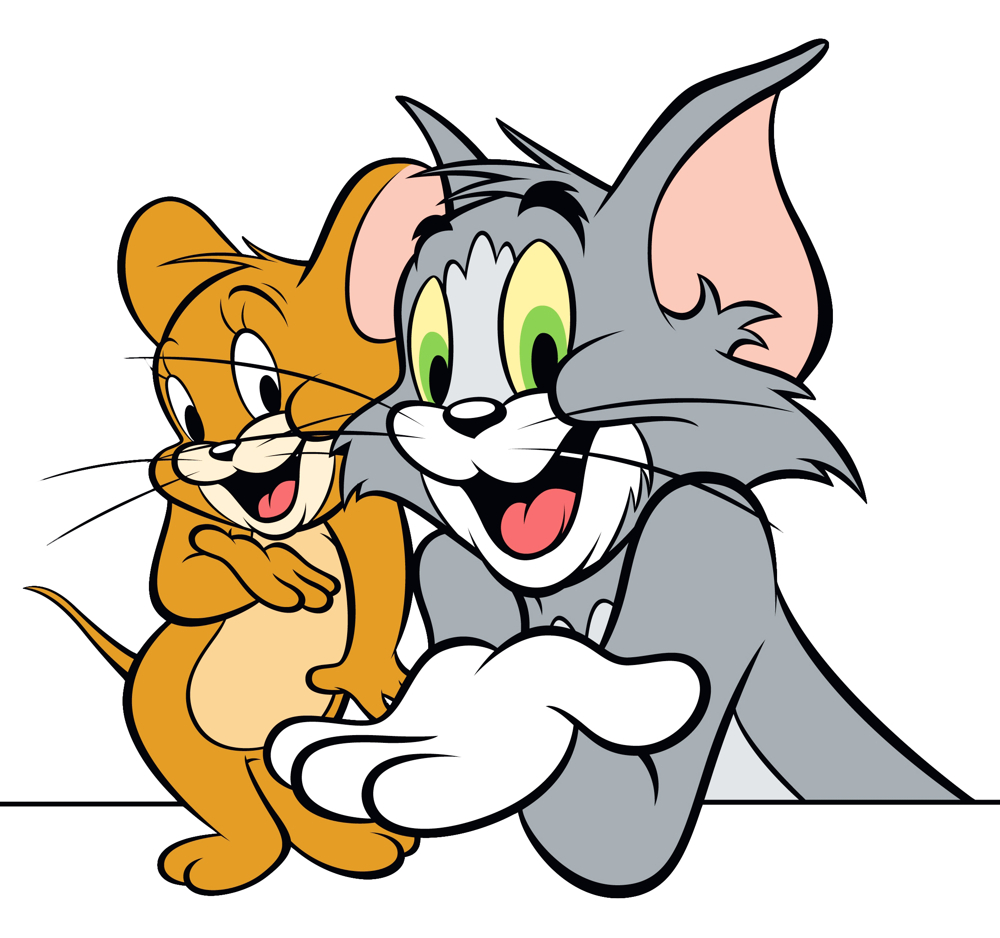

Em bấm vô để mở nha
Này chắc là lá cuối cùng rùi, mặc dù chẳng là nhân dịp gì, chỉ là 1 ngày bình thường nhưng khi anh làm những cái như này, anh chỉ muốn bày tỏ với em là anh thích em điên đảo vcl, như chơi bùa ấy =)))) Anh vẫn chưa nghĩ ra được 1 cái tên gì đó riêng để có thể gọi em. hmmmm, này a phải dành thời gian nhìu hơn để nghĩ thêm rồi, hay là em có muốn anh gọi em bằng cái tên nào đó hem? Hơi kì cục nhưng có khi trước giờ em chưa từng gặp ai khùng như anh đâu nhở. Anh cũng đ biết từ khi nào mà anh thích em như này, nhưng mà anh không muốn giấu cảm xúc của mình làm gì, bình thường đã phải gồng mình ra để mạnh mẽ hơn rồi mà giờ cũng giấu cả với em thì đâu có được. Anh không còn phải ngại ngùng chia sẻ với em về mọi thứ xung quanh anh, hay là cả chính con người anh nữa, kiểu thời gian được nói với em là thời gian đáng quý nhất của anh trong ngày ấy, hơn cả giấc ngủ ngàn vàng của tôi cmnr. Đúng kiểu em luôn ở trong tâm trí anh ấy, ảo ma vl. Anh không giỏi ăn nói, anh cũng không biết nói lời ngon ngọt hay tình tứ như nào, cái ấy nó hơi ngoài khả năng đối với con người khô khan như anh, nhưng đối với anh thì "u're the most special person who has ever existed" . Anh thích tất cả mọi thứ về em, hãy nhớ điều ấy, anh thích nghe giọng em vcl mà ít được gọi cho em quá trời, ôi cái con người này. Hãy chăm chụp cho anh xem về mọi thứ hằng ngày xung quanh của em nha, nhất là về em đó, nhưng mà dần dần bỏ cái tay xuống dùm tôi ạ, cứ che bố nó hết mặt, rất là lạ lùng.
"Dẫu vẫn biết rằng rồi lúc nào đó sớm mai sẽ tới, tôi vẫn khao khát được là vì tinh tú ở lại giữa khoảng trời người"
Chúng mình sẽ sớm gặp lại nhau thôiii.
Love,
Hùng